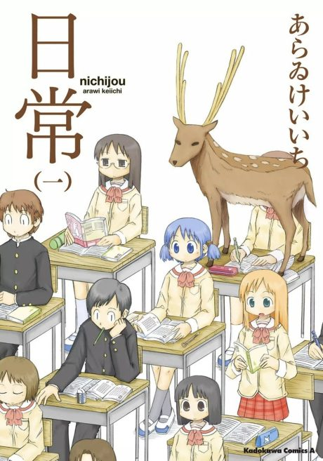

Anime
Anime
MangaNichijou - My Ordinary Life
日常
After the anime, read the manga from Volume 7.
8.3AniList
—Animeter
26 epEpisodes
Anime finished. Where does the manga pick up?
Start at Volume7
The anime mostly adapts material from the first 6 volumes, out of order. Start from Volume 7 for largely new content, or from the beginning since much was rearranged.
16ongoing
Season 1Start reading here